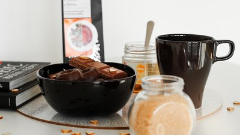

Online-möten
Ska vi ta en fika?
Fika är något typiskt svenskt och mysigt som de flesta av oss älskar. I tider med social distansering finns det få möjligheter att träffa sina vänner på en fika. Det är också det som många anser jobbigast med social distansering. Det kan bli ensamt att sitta hemma och även om det finns många aktiviteter att roa sig med så saknas det något. Så varför inte ta en fika online?
Du och dina vänner kan koppla upp er med hjälp av program som exempelvis Skype och med en webbkamera och mikrofon blir det nästan som att de vore där. Så koka en kopp te, värm en bulle, bjud in dina vänner och koppla upp er i ett virtuellt mötesrum. Mysigt, tycker jag.
Hur gör man?
Det finns många bra program för att ha möten online och Skype är ett gratisalternativ som är enkelt att använda. Programmet går att ladda ner på Skypes hemsida under fliken Nedladdningar. Då filen är nedladdad är det bara att dubbelklicka på filen och sedan trycka på knappen installera. Du kan behöva skapa ett konto för att kunna logga in, men programmet hjälper dig igenom den processen, sedan är det bara att starta upp era online möten. Senioren har en bra steg för steg guide.
Lär känna nya vänner
Känner du inte för att prata med dina vänner idag? Lär känna nya istället! Kompis Sverige är en förening som hjälper nya svenskar att lära sig språket genom att para ihop dem med etablerade svenskar. Genom dem kan du träffa nya vänner och samtidigt hjälpa dem på deras språkresa. Det är både roligt och givande för båda parter. En länk till deras hemsida hittar du här.